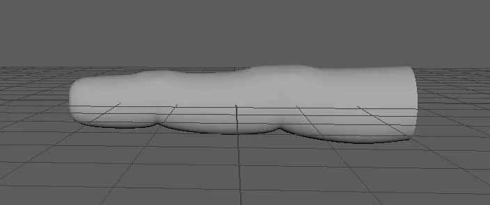

3D Models
Some of my 3D models from the years ranging from environmental models, to humanoids, to prop assets.
Models were made using both Blender and Maya. They were made from 2018 to 2024.
Human Male Images


Some of my 3D models from the years ranging from environmental models, to humanoids, to prop assets.
Models were made using both Blender and Maya. They were made from 2018 to 2024.